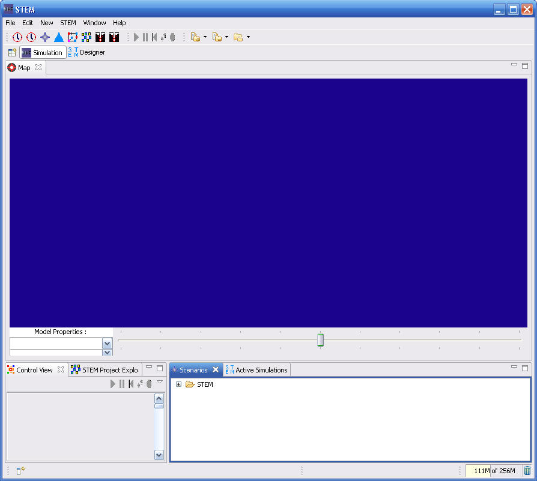

The Simulation perspective is loaded when a simulation is
activated from the Designer perspective or
if the user selects it. It is started with a set of default Views.
Subsequent uses of STEM will load the perspectives and views that you
last used.

The purpose of this perspective is to hold the windows that are used to display the progress of a simulation as it runs. The following Views are displayed by default. However you can close any of these views and open others.
The following views can be selected from the Window->Other menu.